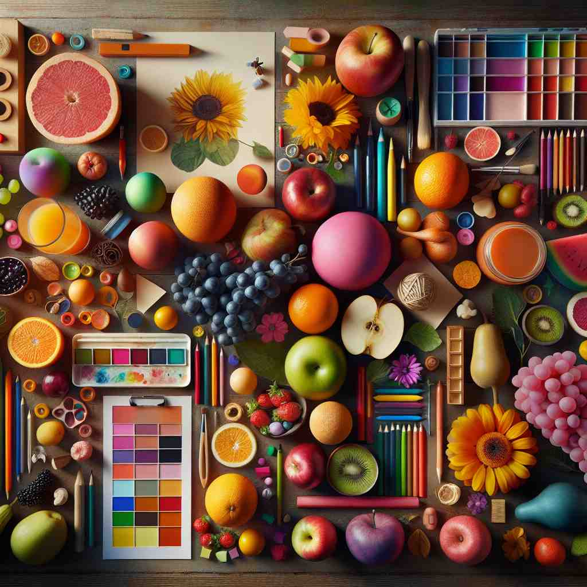

🗝️ n. the act of combining parts or elements to form a whole
🖼️ 在一个实验室里，科学家们小心翼翼地将不同的化学元素混合在一起。经过一连串精确的步骤，一个全新的化合物形成了。这个过程展示了'composition'作为将部分或元素组合成一个整体的行为。
🔍 想象你在组合不同的积木块。'Composition'的核心意义就是将各种部分或元素组合成一个整体。无论是创作音乐、写作、拍照，还是分析物质成分，都涉及到这种'组合'的过程。通过联想这个组合的动作，你可以更容易理解和记忆'composition'的各种含义。

💬 The artist created a colorful composition with fruits and flowers on the table.
💬 The teacher discussed the composition of elements in chemistry.
💬 The artist is creating a beautiful artistic composition on the canvas.

💬 The artist is working on a colorful mosaic composition.
🔗 1. compose: 组成 2. component: 成分 3. composite: 合成物
💡 记忆 "composition" 时，可以联想为 'components positioned together'，即多个成分共同组成的整体，通过将 '放置' 和 '一起' 的概念结合，帮助记忆其意思。
🗝️ n. a creative work, especially a piece of music or writing
🖼️ 在一家咖啡馆里，一位年轻的作曲家正在钢琴前聚精会神地创作。每个音符都经过精心斟酌，最终形成了一曲动人的乐章，体现了'composition'作为一项创作作品的意义。
💬 She performed her own composition at the concert.
❓ 将不同元素（如音符、文字）组合成一个整体作品
🗝️ n. the way in which something is put together or arranged
🖼️ 在一个艺术工作室内，画家正在仔细调整画布上的色块。他不断地移动和调整每个元素的位置，直到整体看起来和谐有序。这种精心的安排体现了'composition'作为某物被组织或安排的方式的含义。
💬 The composition of the photograph was carefully planned.
❓ 描述组成整体的各部分的排列方式
🗝️ n. a mixture of ingredients
🖼️ 在一个热闹的厨房里，厨师正在准备一道精美的菜肴。他将多种香料和佐料混合在一起，创造出一道独特风味的佳肴。这体现了'composition'作为配料混合物的含义。
💬 The scientist analyzed the composition of the new alloy.
❓ 将多种成分组合在一起形成的混合物
🗝️ n. a piece of writing, especially one done as a school assignment
🖼️ 在一个安静的教室里，学生们正在专心地进行写作练习。每个学生都在用心地完成一篇文章，这是他们的作业任务，体现了'composition'作为一篇写作作品，特别是在学校中完成的含义。
💬 Students were asked to write a composition about their summer vacation.
❓ 将想法和语言组合成一篇文章
🗝️ n. the artistic arrangement of the parts of a picture
🖼️ 在一间明亮的摄影工作室，摄影师正在审视拍摄到的画面。他关注构图的每一个细节，确保每个元素都位于理想的位置，以创造出完美的视觉效果。这展示了'composition'作为图片的艺术排列的意义。
💬 The artist paid great attention to the composition of the painting.
❓ 艺术作品中各元素的组合与安排